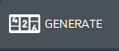
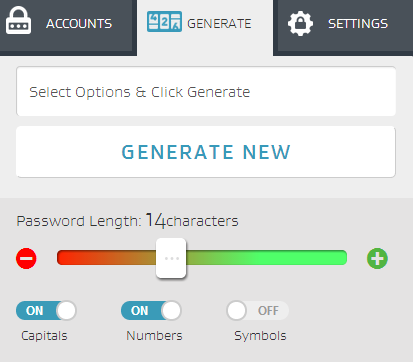
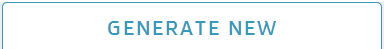
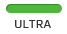
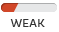

import AVGME_common as AM_common reload(AM_common) test_case_id="AM-191" def AM_WebApp_PasswordLenghtOption_197(log_file): Lock=() Generate=() UI=() GenNew=() Ultra=() Plus=() Minus=() Scroll=() Medium=() Weak=() click(AM_common.redicon) wait(3) if exists(Generate): click(Generate) AM_common.verify(log_file,UI) wait(1) i=0 while i<13 : click (Plus) i+=1 #AM_common.verify(log_file,GenNew) click(GenNew) AM_common.verify(log_file,Ultra) doubleClick(Ultra) type("a", KeyModifier.CTRL) wait(1) type("c", KeyModifier.CTRL) wait(2) data=Env.getClipboard() k=len(data) print(str(data)) print(k) AM_common.write_log(log_file,"Generated pasword is-"+str(data)) AM_common.write_log (log_file,'and has lenght-'+str(k)+ "-while expected is 27") click(AM_common.redicon) i=0 wait(2) if exists(Generate): click(Generate) AM_common.verify(log_file,Minus) while i<8 : click (Minus) i+=1 click(GenNew) wait(1) if exists(Medium): doubleClick(Medium) elif exists(Weak): doubleClick(Weak) type("a", KeyModifier.CTRL) wait(1) type("c", KeyModifier.CTRL) wait(2) data=Env.getClipboard() k=len(data) print(str(data)) print(k) AM_common.write_log(log_file,"Generated pasword is-"+str(data)) AM_common.write_log (log_file,'and has lenght-'+str(k)+ "-while expected is 6") #Function_call if __name__ == "__main__": log_file = "" try: script_path, test_case_script_name=os.path.split(sys.argv[0]) test_case_script_name=test_case_script_name + ".sikuli" log_file=AM_common.create_log_folder(test_case_script_name, test_case_id) #AM_common.InstallExtention(log_file) #AM_common.AppOpen(log_file) AM_common.LoginTOApp(log_file) AM_WebApp_PasswordLenghtOption_197(log_file) AM_common.PassCase(log_file, test_case_id) except FindFailed, f: msg = "Find Failed Exception: %s " % f AM_common.write_log(log_file,msg) AM_common.FailTestCase(log_file, test_case_id) except Exception, e: msg = "Exception detected: %s " % e print "exception" AM_common.write_log(log_file,msg) AM_common.FailTestCase(log_file, test_case_id)